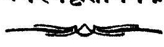
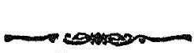
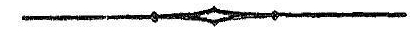

ॐ
काश्मीर- संस्कृतग्रन्थावलिः ।

ग्रन्थाङ्क: ३०
तन्त्रालोकः

श्रीमन्महामाहेश्वराचार्यवर्य-श्रीमदभिनवगुप्ताचार्यविरचितः
श्रीमन्महामाहेश्वराचार्य - श्रीजयरथकृत विवेकाभिख्यटीकोपेतः
श्रीभारतधर्ममार्तण्ड-कश्मीर महाराज-
श्रीप्रतापसिंहवरप्रतिष्ठापिते प्रत्नविद्याप्रकाश- (रिसर्च) कार्यालये
तदध्यक्ष- पण्डित - मधुसूदन - शास्त्रिणा
उद्दिष्टकार्यालयस्थपण्डितसहायेन
संगृह्य, संशोधन-पर्यायाङ्कन-विवरणादिसंस्करणोत्तरं
पाश्चात्यविद्वत्परिषत्संमताधुनिक सुगमशुद्धरीत्युपन्यासादिसंस्कारैः परिष्कृत्य
मुम्बय्यां
तत्त्वविवेचकाख्य-मुद्रणालये मुद्रापयित्वा प्राकाश्यमुपनीतः

संवत् १९७७ ख्रस्ताब्दः १९२१
काश्मीर - श्रीनगर
( अस्य ग्रन्थस्य सर्वे प्रकाशन-मुद्रापणाद्यधिकाराः प्रोक्तमद्दाराजवर्यैः
स्वायत्तीकृताः सन्ति)